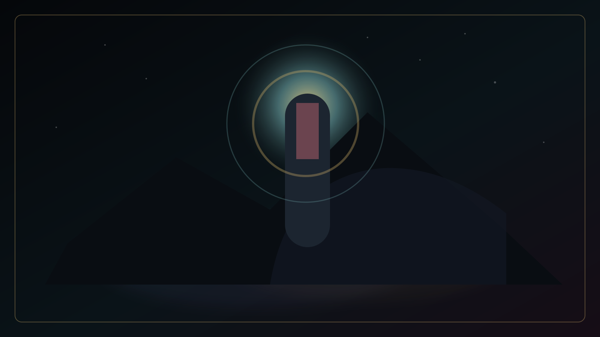
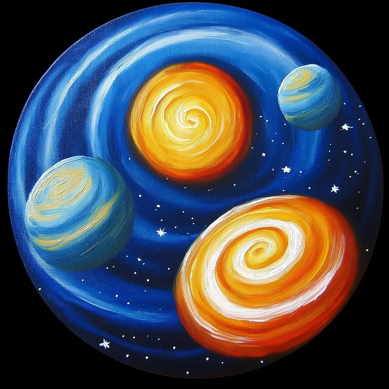
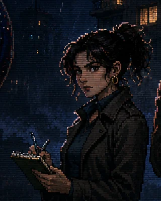

BLACK HOLLOW · 04:04
NIGHTMARE404
Una señal imposible ha empezado a emitir desde debajo de la ciudad.

BLACK HOLLOW INCIDENT
NIGHTMARE404NOCTURNE EDITION
La realidad no se rompe. Te contempla.
Cinco anomalías laten bajo Black Hollow como órganos de una inteligencia oceánica y antigua. Investiga, sobrevive y decide cuánto abismo puede tolerar la ciudad antes de mirarte de vuelta.
PROTOCOLO DE ACCESO · NUEVA CAMPAÑA
Elige quién desciende a Black Hollow
Cada investigador altera recursos, decisiones y estrategia. Ninguna elección sale intacta del abismo.
◇ La campaña completa puede terminarse con cualquiera de los tres investigadores.

CARTOGRAFÍA IMPOSIBLE · BLACK HOLLOW
Selecciona el siguiente expediente
Los cuatro focos exteriores pueden investigarse en cualquier orden. Bajo todos ellos duerme una conciencia que no pertenece a la Tierra.
LITURGIA INTERCEPTADA
La ciudad sigue transmitiendo
Cuatro heridas rodean Black Hollow. Resolverlas revelará si la pesadilla es un mensaje o una invitación.
PRONÓSTICO DE INTERFERENCIA
DÍA 1 · 22:40
//// LLUVIA
Bloque 404
El ascensor marca una planta que no existe.
ARCHIVO
Archivo
Documentación recuperada de la frecuencia 404.